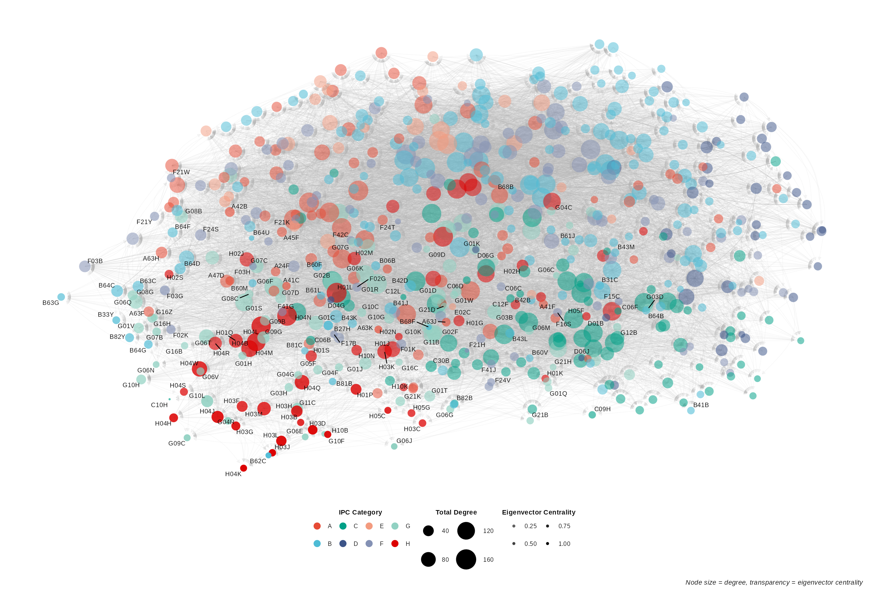

graph TB
A[Input: RCA values<br/>for all technologies<br/>except target] --> B[Tree 1]
A --> C[Tree 2]
A --> D[Tree 3]
A --> E[...]
A --> F[Tree B]
B --> G[Vote: 1]
C --> H[Vote: 0]
D --> I[Vote: 1]
E --> J[Vote: 1]
F --> K[Vote: 1]
G --> L[Aggregate Votes]
H --> L
I --> L
J --> L
K --> L
L --> M[Probability = 4/5 = 0.80<br/>Region will specialize<br/>in target technology]
style A fill:#e1f5ff
style M fill:#ffe1e1
3 The interconnectedness between regions and technologies
3.1 Methodological Motivation
Traditional relatedness frameworks model diversification through symmetric co-occurrence matrices and linear aggregation of relatedness density (Hausmann and Hidalgo 2011). However, as established in our problem statement, these constructs suffer from three structural limitations: (1) symmetry assumptions that obscure directional dependencies between technologies, (2) linear aggregation that loses granular information about technology-specific requirements, and (3) noise when technologies outnumber regions.
We address these limitations by replacing traditional measures with machine learning-derived alternatives. Specifically, we use Random Forest models to generate: (1) asymmetric feature importance networks (FITS) that capture directional, hierarchical technology relationships, replacing symmetric relatedness measures; and (2) predicted probabilities (technological potential) that estimate region-specific feasibility of technology adoption, replacing linear relatedness density. This approach enables the contextualization of diversification strategies by accounting for technology-specific characteristics, regional knowledge infrastructure, and broader spatial dynamics—elements that traditional measures cannot adequately capture.
Before detailing our methodology, we briefly situate this approach within the broader literature. The Principle of Relatedness (PoR) formalizes the empirical observation that shared input requirements (knowledge, resources, capabilities) determine diversification feasibility (Hidalgo et al. 2018; Hidalgo 2021). Economic Complexity (EC) complements this by quantifying sophistication patterns (Hidalgo and Hausmann 2009). While these frameworks have proven valuable for policy (Zaccaria et al. 2018; E and A 2021), deriving granular, context-specific implications remains challenging (Hidalgo 2023; Li and Neffke 2024). Recent work on unrelated diversification (Flávio L. Pinheiro et al. 2022; Boschma et al. 2023), geographic inequalities (Flavio L. Pinheiro et al. 2025; Hartmann et al. 2017), and emerging technologies (Lee et al. 2018; Fessina et al. 2024) highlights the need for methodologies that capture contextual nuances beyond path dependency identification.
Our approach responds to this need by modeling technology relationships and regional capabilities in ways that explicitly incorporate heterogeneity. The following sections establish our notation system, describe the Random Forest algorithm, and detail how we construct and interpret technological potential, FITS, and coherence measures.
3.2 Notation and Data Structure
We establish consistent notation used throughout:
Sets: - \(\mathcal{T} = \{t : 1 \le t \le N_T\}\): set of technologies - \(\mathcal{R} = \{r : 1 \le r \le N_R\}\): set of regions
- \(\mathcal{Y} = \{y : 1 \le y \le N_Y\}\): set of years - \(\mathcal{C} = \{c : 1 \le c \le N_C\}\): set of technology categories
Variables: - \(X_{r,t,y}\): patent count for region \(r\) in technology \(t\) during year \(y\) - \(\text{RTA}_{r,t,y}\): Revealed Comparative Advantage (later referred to as RTA for patents) - \(z_{r,t,y} \in \{0,1\}\): binary indicator of technological capacity (specialization) - \(p_{r,t,y} \in [0,1]\): predicted probability of future specialization (technological potential) - \(I_{t \to t'}\): feature importance weight, directed relationship from technology \(t\) to \(t'\)
We use European Patent Office data (1978-2021) classified at the 4-digit IPC level, yielding 641 distinct technologies across 345 NUTS2 regions in 34 European countries. IPC classifications provide hierarchical structure: section (letter), class (two digits), subclass (letter). For example, F16H encompasses Section F (Mechanical engineering), Class 16 (engineering elements for mechanical power transmission), and Subclass H (gearing systems). We supplement patent data with Eurostat regional socio-economic indicators detailed in subsequent sections.
3.3 Revealed Technological Advantage
We quantify regional specialization using the Revealed Comparative Advantage (balassa1965RTA?). Although originally designed for trade data, this metric has been widely adopted in innovation geography literature. Following (balland2017geography?), we refer to it as Revealed Technological Advantage (RTA) in our patent context. The RTA measures relative specialization, enabling simultaneous capture of expertise depth and portfolio diversity while reducing co-occurrence noise (Fessina et al. 2024). Despite critiques regarding patent-based applications (Balland and Boschma 2019; Diodato et al. 2023), RTA aligns with our objective of capturing meaningful technology relationships through machine learning rather than raw co-occurrence.
The RTA for region \(r\) in technology \(t\) during year \(y\) is:
\[ \text{RTA}_{r,t,y} = \frac{\displaystyle\frac{X_{r,t,y}}{\sum_{t'} X_{r,t',y}}} {\displaystyle\frac{\sum_{r'} X_{r',t,y}}{\sum_{r',t'} X_{r',t',y}}} = \frac{X_{r,t,y}\,\sum_{r',t'}X_{r',t',y}} {\bigl(\sum_{t'}X_{r,t',y}\bigr)\,\bigl(\sum_{r'}X_{r',t,y}\bigr)} \]
For each year \(y\), we construct the RTA matrix \(\mathbf{R}^{(y)}\) with entries \(\text{RTA}_{r,t,y}\):
\[ \mathbf{R}^{(y)} = \bigl[\text{RTA}_{r,t,y}\bigr]_{r=1,\dots,N_{R}}^{t=1,\dots,N_{T}} \]
These yearly matrices form the foundation for all subsequent modeling. We binarize specialization for classification tasks:
\[ z_{r,t,y} \;=\; \begin{cases} 1 & \text{if }\text{RTA}_{r,t,y}\ge1 \\ 0 & \text{otherwise} \end{cases} \]
where \(z_{r,t,y} = 1\) indicates region \(r\) has comparative advantage (specialization) in technology \(t\) at year \(y\).
3.4 Random Forest Algorithm
Before detailing our applications, we provide comprehensive context on the Random Forest algorithm, which fuels our entire methodological approach. We focus on binary classification where \(y_i \in \{0,1\}\).
3.4.1 Algorithm Structure
Random Forest constructs an ensemble of \(B\) decision trees through bootstrap aggregating (bagging) with random feature subsampling. Each tree \(T_b\) is built on a bootstrap sample \(\mathcal{D}_b^*\) drawn with replacement from the original dataset.
3.4.2 Tree Construction via Recursive Partitioning
Each tree recursively partitions the feature space through binary splits. At node \(t\), we randomly select \(m\) features (typically \(m = \sqrt{p}\)) and evaluate all possible splits within this subset. For feature \(j\) and threshold \(\tau\), the split creates two child nodes: \(t_L = \{i : x_{ij} \leq \tau\}\) and \(t_R = \{i : x_{ij} > \tau\}\).
3.4.3 Gini Impurity as Split Criterion
Split quality is assessed via Gini impurity:
\[G(t) = 1 - \sum_{k=0}^{1} p_k^2(t) = 2p_0(t)p_1(t)\]
where \(p_k(t) = n_k(t)/n(t)\) represents the proportion of class \(k\) observations at node \(t\). Gini impurity quantifies node heterogeneity: \(G=0\) indicates perfect purity (homogeneous class), while \(G=0.5\) indicates maximum impurity (equal class distribution). The optimal split maximizes weighted impurity reduction:
\[\Delta G(j, \tau) = G(t) - \left[\frac{n(t_L)}{n(t)} G(t_L) + \frac{n(t_R)}{n(t)} G(t_R)\right]\]
Weighting by relative node size prevents trivial splits that isolate single observations into pure but uninformative leaves.
3.4.4 Termination and Class Assignment
Recursive splitting continues until predefined stopping criteria: node purity (\(G=0\)), minimum node size threshold, or maximum tree depth. Terminal nodes are assigned the majority class of their constituent observations.
3.4.5 Ensemble Prediction
For prediction, observation \(\mathbf{x}\) traverses all \(B\) trees. Final classification aggregates individual tree predictions via majority voting:
\[\hat{y}(\mathbf{x}) = \text{mode}\{\hat{y}_1(\mathbf{x}), \ldots, \hat{y}_B(\mathbf{x})\}\]
Class probabilities are estimated as the proportion of trees predicting each class:
\[\hat{P}(y=1|\mathbf{x}) = B^{-1}\sum_{b=1}^{B} \mathbb{I}[\hat{y}_b(\mathbf{x})=1]\]
This probability represents empirical vote share across trees. Values near 1 indicate strong consensus for class 1 (high confidence), while values near 0.5 reflect uncertainty. Unlike parametric models, these are data-driven vote proportions rather than model-based probability estimates.
3.4.6 Variance Reduction Mechanism
The algorithm’s effectiveness stems from variance reduction through decorrelated predictions. Bootstrap sampling and random feature selection reduce inter-tree correlation \(\rho\), yielding ensemble variance:
\[\text{Var}(\bar{y}) = \rho\sigma^2 + \frac{1-\rho}{B}\sigma^2\]
As \(B\) increases and \(\rho\) decreases, ensemble variance diminishes while maintaining the low bias of flexible tree models.
3.4.7 Feature Importance
Feature importance quantifies each predictor’s contribution by aggregating Gini impurity reductions:
\[I(j) = \frac{1}{B}\sum_{b=1}^{B} \sum_{t \in T_b : v(t)=j} \Delta G(t)\]
where the sum runs over all nodes using feature \(j\) for splitting. Higher values indicate features consistently creating purer partitions. Feature importance measures predictive association rather than causal effect, and suffers from bias toward high-cardinality features and correlated predictor sets. It ranks predictive relevance but requires caution in causal interpretation.
3.6 Technological Potential
We follow the methodology of Albora et al. (2023), originally developed for trade data. The innovation lies in modeling each technology separately rather than constructing a single global model. For every technology \(i \in \mathcal{T}\), we train a binary classification model where:
- Outcome: \(z_{r,i,y}\) (whether region \(r\) specializes in technology \(i\) at year \(y\))
- Features: \(\{\text{RTA}_{r,t,y-\delta} : t \in \mathcal{T}, t \neq i\}\) (RTA values for all other technologies \(\delta\) years prior)
This technology-specific approach enables each model to learn unique dependency patterns. Setting \(\delta = 4\) years balances predictive performance with data availability (Andreoni and Chang 2019).
3.6.1 Training Procedure
We predict specialization for target years \(y_t \in \{2008, \ldots, 2018\}\) using data from 1978 onward. For each target year \(y_t\) and technology \(i\):
Training set: \[ X_{\text{train}} = \{ \text{RTA}_{r,t,y} \mid y \in [1978, y_t - 2\delta], t \neq i\} \] \[ Y_{\text{train}} = \{z_{r,i,y} \mid y \in [1978 + \delta, y_t - \delta]\} \]
Test set: \[ X_{\text{test}} = \{ \text{RTA}_{r,t,y_t-\delta} \mid t \neq i\} \] \[ Y_{\text{test}} = \{z_{r,i,y_t}\} \]
This produces 7,051 models (641 technologies × 11 years). Given computational constraints, we performed cross-validation on a random sample of four technologies (G06G, B67B, D02J, C08J) and applied the most frequent optimal parameters across all models: mtry = 139, trees = 100, min_n = 38. Training was conducted in R using the Ranger package (Wright and Ziegler 2017), orchestrated via the targets pipeline (Landau 2021) within the tidymodels framework.
3.6.2 Output: Regional Technological Potential
Each model produces probabilities \(p_{r,i,y} = P(z_{r,i,y} = 1 \mid \text{RTA}_{r,\cdot,y-\delta})\) representing the likelihood that region \(r\) develops specialization in technology \(i\) at year \(y\) given its past portfolio. These probabilities constitute regional technological potential—a forward-looking, region-specific measure of diversification feasibility.
Aggregating across technologies yields average regional potential:
\[p_{r,y} = \frac{\sum_{t} p_{r,t,y}}{N_T}\]
3.6.3 Conceptual Interpretation
Technological potential differs fundamentally from relatedness density. While relatedness density assumes technologies combine linearly and symmetrically, potential: 1. Captures non-linear interactions between technologies through Random Forest’s decision tree structure 2. Allows asymmetric dependencies where technology \(t\) may enable \(t'\) but not vice versa 3. Produces region-specific estimates rather than universal technology-pair relationships 4. Reflects time-varying dynamics by training on expanding windows of historical data
3.6.4 Empirical Implications
High potential (\(p_{r,t,y} \approx 1\)) indicates a region’s existing portfolio strongly predicts future specialization in technology \(t\)—the region likely possesses necessary complementary capabilities. Low potential (\(p_{r,t,y} \approx 0\)) suggests capability gaps despite potential relatedness. Crucially, potential varies across regions for the same technology, enabling analysis of how regional knowledge infrastructure, national ecosystems, and spatial factors moderate diversification feasibility—our core research questions.
3.7 Feature Importance Technology Space (FITS)
Traditional technology networks use patent citations or co-occurrence patterns. Citations suffer from three limitations: (1) examiner-added citations may not reflect actual knowledge flows, (2) aggregating patent-level citations to technology-level relationships obscures directionality, and (3) citation networks are backward-looking rather than predictive (Fessina et al. 2024). Co-occurrence networks face the issues outlined in our problem statement: symmetry, noise, and linear assumptions.
FITS addresses these limitations by constructing asymmetric, predictive networks from machine learning. Rather than inferring relationships from co-occurrence, FITS extracts directional dependencies from the feature importance scores of our Technological Potential models.
3.7.1 FITS Construction
Recall that for each technology \(i\), we trained a Random Forest model predicting \(z_{r,i,y}\) using \(\{\text{RTA}_{r,t,y-\delta} : t \neq i\}\) as features. The feature importance \(I_i(t)\) quantifies how much technology \(t\) contributes to predicting future specialization in technology \(i\) across all regions and time periods in the training data.
We formalize FITS as a directed, weighted network \(G = (V, E, W)\) where: - Nodes \(V = \mathcal{T}\): the set of technologies - Edges \(E\): directed connections \((t \to i)\) for all \(t, i \in \mathcal{T}, t \neq i\) - Weights \(W_{t \to i} = I_i(t)\): feature importance of technology \(t\) in model predicting technology \(i\)
We normalize weights within each target technology’s model:
\[ W_{t \to i} = \frac{I_i(t)}{\sum_{t' \neq i} I_i(t')} \]
ensuring that for each technology \(i\), incoming edge weights sum to 1: \(\sum_{t \neq i} W_{t \to i} = 1\).
3.7.2 Mathematical Formulation
From the Random Forest algorithm, feature importance for technology \(t\) in model \(M_i\) (predicting technology \(i\)) is:
\[ I_i(t) = \frac{1}{B}\sum_{b=1}^{B} \sum_{n \in T_b : v(n)=t} \Delta G(n) \]
where the sum runs over all nodes \(n\) in all trees \(T_b\) that split on feature \(t\), and \(\Delta G(n)\) is the Gini impurity reduction at node \(n\). Technologies that consistently create purer partitions when predicting \(i\) receive higher importance scores.
The full FITS network aggregates these relationships across all 641 technologies, producing a \(641 \times 641\) weighted adjacency matrix (excluding self-loops).
3.7.3 Asymmetry and Hierarchy
Crucially, FITS is asymmetric: \(W_{t \to i} \neq W_{i \to t}\) in general. This asymmetry captures hierarchical technological dependencies:
- If \(W_{t \to i} \gg W_{i \to t}\), technology \(t\) is a prerequisite or stepping stone toward \(i\) (expertise in \(t\) predicts future \(i\), but not vice versa)
- If \(W_{t \to i} \approx W_{i \to t}\), technologies are complementary peers (mutual predictive relationships)
- If \(W_{t \to i} \ll W_{i \to t}\), technology \(i\) is a prerequisite toward \(t\)
This hierarchical structure is invisible to symmetric co-occurrence measures and reveals technological trajectories: regions can identify which current capabilities enable paths toward desired future technologies.
3.7.4 Conceptual Interpretation
FITS edges represent predictive dependencies based on historical diversification patterns across all European regions. A strong edge \(t \to i\) indicates that regions with RTA in technology \(t\) at time \(y-\delta\) frequently developed RTA in technology \(i\) by time \(y\), even after controlling for all other technologies. This is fundamentally different from co-occurrence (which measures simultaneous presence) or citations (which measure backward-looking knowledge flows).
3.7.5 Empirical Implications
FITS enables novel analyses of technological landscapes: 1. Path identification: For a target technology \(i\), examine incoming edge weights to identify strong predictors (prerequisites) 2. Branching points: High out-degree nodes represent foundational technologies enabling diverse future specializations 3. Category structure: Aggregating edges by IPC categories reveals cross-domain dependencies (e.g., mechanical engineering → electronics) 4. Regional positioning: Comparing a region’s current portfolio against FITS edge patterns reveals strategic opportunities and gaps
In our empirical analysis, FITS allows testing whether technology-specific characteristics (position in the network hierarchy, in/out-degree patterns, category embeddings) moderate diversification outcomes—aspects traditional relatedness measures cannot capture.
3.7.6 Network Visualization

The figure displays the FITS network with nodes colored by IPC category, sized by total degree, and transparency reflecting eigenvector centrality. Labels appear for high-centrality technologies. The structure reveals dense within-category connections and sparse but critical between-category bridges.
3.8 Coherence: Bridging Technology Networks and Regional Portfolios
FITS identifies technology-to-technology relationships. Technological Potential quantifies regional diversification feasibility. Coherence bridges these levels by measuring the alignment between a technology’s position in the FITS network and a region’s existing specialization structure.
3.8.1 Conceptual Motivation
Consider two regions, both lacking specialization in technology \(i\), both having similar potential \(p_{r,i,y}\). However, Region A specializes in technologies that are strong predictors of \(i\) (high incoming FITS edges), while Region B specializes in technologies unrelated to \(i\) in the network. Coherence captures this difference: Region A has high coherence with \(i\) (its portfolio aligns with \(i\)’s network prerequisites), while Region B has low coherence (misalignment).
This metric operationalizes the “knowledge coherence” and “cognitive proximity” concepts from innovation literature (neffke2011how?; boschma2015towards?) using our directional network structure. It enables testing whether diversification success depends not just on potential (predicted feasibility) but on the structural fit between regional portfolios and technology network positions.
3.8.2 Mathematical Construction
For each region \(r\), technology \(i\), and IPC category \(c\), we construct two embedding vectors capturing \(i\)’s directional network position and compare them to \(r\)’s average embeddings for technologies in category \(c\).
Technology embeddings (individual technology \(i\)): - Incoming: \(\text{embcat\_to}_{i,c} = \frac{\sum_{t \in c} W_{t \to i}}{|\{t \in c : W_{t \to i} > 0\}|}\) (average FITS weight from category \(c\) to technology \(i\)) - Outgoing: \(\text{embcat\_from}_{i,c} = \frac{\sum_{t' \in c} W_{i \to t'}}{|\{t' \in c : W_{i \to t'} > 0\}|}\) (average FITS weight from technology \(i\) to category \(c\))
Regional average embeddings (region \(r\), category \(c\)): - Incoming: \(\overline{\text{embcat\_to}}_{r,c} = \frac{1}{|S_{r,c}|}\sum_{t \in S_{r,c}} \text{embcat\_to}_{t,c}\) where \(S_{r,c} = \{t \in c : \text{RTA}_{r,t,y} \geq 1\}\) - Outgoing: \(\overline{\text{embcat\_from}}_{r,c} = \frac{1}{|S_{r,c}|}\sum_{t \in S_{r,c}} \text{embcat\_from}_{t,c}\)
Coherence is the cosine similarity between technology \(i\)’s directional embeddings and region \(r\)’s average directional embeddings for category \(c\):
\[ \text{Coherence}_{r,i,c,y} = \frac{\mathbf{v}_1 \cdot \mathbf{v}_2}{||\mathbf{v}_1|| \cdot ||\mathbf{v}_2||} \]
where: - \(\mathbf{v}_1 = [\text{embcat\_to}_{i,c}, \overline{\text{embcat\_to}}_{r,c}]\) - \(\mathbf{v}_2 = [\text{embcat\_from}_{i,c}, \overline{\text{embcat\_from}}_{r,c}]\)
3.8.3 Interpretation
Coherence ranges from -1 to 1: - High coherence (\(\approx 1\)): Technology \(i\)’s FITS network position (both incoming and outgoing connections to category \(c\)) closely matches the average network position of technologies in which region \(r\) specializes within category \(c\). The region’s existing capabilities align with the structural prerequisites and consequences of technology \(i\). - Neutral coherence (\(\approx 0\)): Misalignment between technology \(i\)’s relational structure and regional specialization patterns. - Negative coherence (\(\approx -1\)): Technology \(i\)’s network position is opposite to the region’s specialization structure (e.g., \(i\) receives inputs from categories where the region sends outputs).
3.8.4 Empirical Application
Coherence serves two roles in our empirical analysis:
Interaction with Potential: Test whether high potential translates to actual diversification only when coherence is also high (H2a: technology-specific characteristics moderated by regional knowledge coherence)
Regional Infrastructure Measure: Aggregate coherence across a region’s non-specialized technologies indicates how well the regional portfolio is “positioned” in the FITS network for future diversification (captures knowledge infrastructure quality)
By incorporating coherence, we test whether successful diversification requires not just predicted feasibility (potential) and related capabilities (traditional relatedness), but also structural alignment between regional portfolios and network prerequisites—a form of contextualization that traditional measures cannot capture.
4 Summary of Methodological Framework
Our approach replaces traditional relatedness constructs with machine learning-derived measures that enable contextualized diversification analysis:
- Technological Potential (\(p_{r,t,y}\)): Region-specific, non-linear, time-varying probabilities replace linear relatedness density
- FITS Network (\(W_{t \to t'}\)): Asymmetric, predictive dependencies replace symmetric co-occurrence-based relatedness
- Coherence (\(\text{Coherence}_{r,t,c,y}\)): Structural alignment between regional portfolios and technology network positions captures knowledge infrastructure quality
Together, these measures allow testing how diversification is contingent on regional knowledge infrastructure (RQ2), national ecosystem characteristics (RQ3), and spatial factors (RQ4) in ways that traditional relatedness frameworks cannot—addressing the core problem of contextualizing diversification strategies beyond path dependency identification.